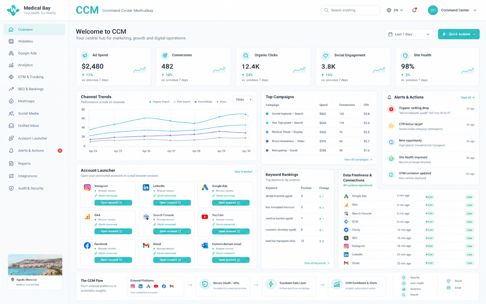
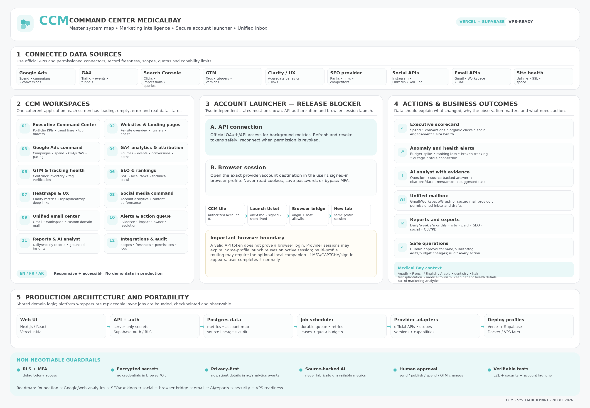

CCM
Command Center Management
One calm, secure command center for website performance, paid media, SEO, social channels, email and the actions that grow Medical Bay.
This is a build blueprint—not a claim that providers are connected yet. The implementation agent must verify every integration against real accounts and current API permissions.

Built around Medical Bay’s actual digital journey
Medical Bay presents itself as an Agadir-based medical-tourism coordinator. Its public site covers cosmetic dentistry, hair transplantation and medical-tourism support, with French, English and Arabic navigation.
Cosmetic dentistry
Monitor service pages and landing pages for smile design, veneers, crowns, zirconium, implants, whitening and aligners where currently listed.
Hair transplantation
Track FUE/DHI and related service landing pages, localized search demand and inquiry conversions.
Medical tourism
Measure lead-source performance for international inquiries and content around clinic, accommodation and travel coordination.
Marketing funnel
Privacy boundary
CCM is a marketing command center, not a medical record system. Keep patient names, phone numbers, health details, free-text inquiries and treatment data out of GA4, ads, URLs, generic logs and AI prompts.
One system, twelve workspaces
Every destination must be a real route with working controls and loading, error, empty, permissions and populated states.
Executive Command Center
Portfolio KPIs, comparisons, top movers and alerts.
Websites
Domains, page inventory, funnels and site health.
Google Ads
Campaigns, cost, conversions, budgets and CPA/ROAS.
GA4 & Attribution
Traffic sources, events, landing pages and conversions.
GTM & Tracking
Containers, tags, triggers, versions and validation.
SEO & Rankings
GSC, technical checks, local ranks and competitors.
Heatmaps & UX
Clarity snapshots, replay links and friction signals.
Social Command
Account health, content metrics and publishing where approved.
Unified Email
Gmail, Workspace and supported custom-domain mail.
Alerts & Actions
Evidence, impact, owner, due date and resolution history.
Reports & AI Analyst
Scheduled briefs and evidence-backed explanations.
Integrations & Audit
Scopes, sync health, permissions, retention and logs.
Use the source of truth for each metric
Google + website stack
| Source | What CCM uses it for |
|---|---|
| Google Ads API | Spend, campaign/ad-group metrics, conversions, CPA/ROAS, budget pacing. |
| GA4 Data API | Sessions, acquisition, events, funnels, key events, landing pages and revenue if configured. |
| Search Console | Clicks, impressions, CTR, average position, queries, pages, devices and countries. |
| GTM API | Container/workspace/tag inventory, versions and controlled publish workflow. |
| PageSpeed + uptime | Performance diagnostics, Core Web Vitals where available, SSL and availability. |
| Microsoft Clarity | Supported aggregate exports/snapshots and links to native replay/heatmap screens. |
Data freshness and quotas
Every connector needs a documented scope/permissions list, source timestamp, last successful sync, pagination/checkpoint, quota budget, retry policy, stale-data state and failure reason. API absence must not be disguised as a zero.
SEO data layers
Actual search query/page performance.
Keyword/location/device snapshots from an authorized paid provider.
Indexability, canonical/hreflang, status codes, internal links, metadata and structured data.
Only provider-reported mentions/citations/share of voice; never invented AI ranks.
Social provider registry
Availability depends on current API version, account type, OAuth scopes, review approval and provider quotas. Separate organic analytics from paid social reporting.
Never merge unlike numbers
GSC average position is not the same as a third-party tracked rank. Ads conversions and GA4 key events may have different attribution windows and definitions. Keep source and formula visible.
Account Launcher: one click, correct account, correct browser profile
The account launcher must work, not just decorate the dashboard with external links. Keep API authorization and browser login as two independent state machines.
Background access
Official OAuth/API token for reading metrics. Refresh securely; reconnect when revoked; enforce scopes. A good API status does not prove the browser is logged in.
Native website access
Open a verified account/property/page/management deep link in a browser profile that already has the provider session, whenever it remains valid.
Required launch path
Correct deep links
Google Ads customer, GA4 property, GSC property, GTM container, Instagram/Meta business, LinkedIn Page, YouTube Studio, TikTok Business and Gmail mailbox.
Multi-account support
Map account → browser profile. Use a minimal Chromium extension and optionally a paired native helper for deterministic cross-profile launches.
No fake “always signed in” promise
The web app cannot inspect arbitrary provider cookies. The provider can expire sessions or require MFA/CAPTCHA; let the user reauthenticate normally.
A real mailbox workspace—not just a Gmail shortcut
Supported mailbox paths
Gmail API; use the same Google authorization model for custom domains hosted on Workspace.
Microsoft Graph when enabled and authorized.
Official provider API where available; otherwise secure TLS IMAP/SMTP only after checking support and owner approval.
Daily usability
Read, unread, labels/folders, archive, threads, search and pagination.
Draft, reply, reply-all, forward and send-as identity.
Priority view, follow-up reminders and email-to-task conversion.
Cursors, retries, push/webhooks where available and polling fallback.
Security and side-effect controls
- Mailbox-level permissions and separate content policies.
- Store minimal metadata; avoid copying all attachments into the analytics warehouse.
- Confirm before sending, forwarding externally, deleting or bulk actions.
- Show the sender mailbox/address before every send.
- AI mail summarization is opt-in; no message bodies/attachments sent to external AI by default.
OAuth approval is part of delivery
Some Gmail permissions are restricted and server-side storage/processing may trigger provider verification or security-assessment requirements. Track approvals as launch blockers, not as optional documentation.
Before connecting an email
Identify the actual host, auth method, mailbox identity, delegated/shared mailbox requirements, sync frequency, retention need, and user list. Do not assume that every custom-domain mailbox is Gmail.
Vercel + Supabase first, without painting the project into a corner
A modular monolith with separated connector adapters and a durable, observable sync queue is the default—not a premature microservice fleet.

Frontend & API
Next.js/React + TypeScript on Vercel. Keep all provider secrets server-side; short authenticated routes; robust form and error states.
Data and access
Supabase Auth, Postgres, strict RLS, migrations, encrypted private credentials, metric registry, audit trail and account mappings.
Sync and portability
DB-backed queue, leases, idempotency, retries, API quotas and bounded jobs. Share domain logic; wrap cloud/VPS scheduling separately.
Healthcare-aware privacy and production security by default
Identity and access
- Invite-only internal accounts.
- MFA/passkeys and strong sessions.
- Role and account-level authorization.
- Default-deny RLS policies.
Secrets and APIs
- Server-side encrypted refresh tokens.
- Least scopes and explicit reconnect.
- PKCE/state/CSRF and secure callbacks.
- Rotate secrets; no keys in Git/browser/logs.
Operations and audit
- Idempotent jobs, backoff and quota budgets.
- Signed webhooks and replay protection.
- Append-only sensitive action history.
- Backups, restore tests and alerts.
Email privacy
Mailbox content is separately permissioned. Minimize caching. AI summaries and attachment processing require explicit opt-in and policy review.
Marketing data minimization
Use aggregate lead conversion events. Do not push names, emails, phone numbers, medical details or free-text patient questions to ad and analytics platforms.
Human approval required
Sending mail, posting content, editing budgets, changing tags and publishing GTM containers need preview, confirmation, role checks and audit logging.
Privacy/legal workstream: assess Morocco Law 09-08/CNDP requirements and any applicable international data-transfer rules with qualified counsel. Do not make blanket claims of compliance based only on this blueprint.
From “what happened?” to an actionable next step
Alert examples
Show impacted campaigns, baseline, time range, spend and source evidence.
Show keyword, country/device, tracked URL, rank source and observation date.
Show which source went stale, first detected time, last good sync and fix checklist.
AI analyst contract
- Answers grounded in synced records and source citations.
- Show freshness, filters, definitions and uncertainty.
- Separate observation from hypothesis and recommendation.
- Never invent missing data or present correlation as proof.
- Draft tasks or actions; do not execute sensitive changes without approval.
Medicalbay Calm Care—not a generic admin template
Core palette from design.md
Primary
#4bbdbd
Primary 60
#6ccaca
Primary 70
#8ad6d6
Surface
#ffffff
Muted
#f7f8f9
Error
#d9534f
Typography and components
Heebo throughout, spacious line heights, 41px display headline, compact but calm data labels. Main buttons 47px high, 7px radius; cards 8px radius and ~16px padding; soft borders, minimal shadows.
Layout principles
- White background, clear hierarchy and breathing room.
- Quiet left navigation; strong page titles; top filters and date selectors.
- Readable KPI cards, charts, sortable tables and focused action lists.
- Use teal for active/action emphasis, not every surface.
- Keyboard focus, accessible contrast, semantic tables and reduced motion.
Responsive and multilingual
Desktop should support dense operational views; tablet and mobile get adapted tables/navigation, not simply shrunk content. Support EN/FR/AR foundation; Arabic RTL must correctly mirror layout and directional icons.
Prohibited shortcut
Do not deliver charts that use hard-coded “live” values, inert buttons, nonfunctional navigation, or a visually polished front end disconnected from auth/data/backend.
Learn from focused tools; don't clone them into CCM
jafforgehq/site-analytics-tool
Multi-site GA4/Search Console/Bing, Supabase, scheduled sync, stale-data detection, RLS/MFA, exports and content opportunities. A small single-admin project—study the focused slice, not the entire target architecture. License declared MIT.
PostHog/posthog
Product/web analytics, session replay, heatmaps, error tracking and AI/MCP workflows. Inspect licensing per area; do not assume the complete repository has one uniform permissive license.
gitroomhq/postiz-app
Social scheduling, account connectors, analytics and team collaboration. Declares AGPL-3.0; use as a product/UX reference unless code reuse is reviewed.
Use skills and MCPs deliberately
Design and application skills
- 12ui Design: explore multiple reference directions, inspect results and branch into app states; verify CLI help and usage before use.
- Supabase skill: auth, RLS, migrations, Edge Functions, security/performance advisors.
- Vercel deployments/CI skill: preview, environment, build and deployment configuration.
- Data Analytics: metric definitions, chart/report validation and dashboard QA.
- Security/OWASP: OAuth, RLS, authorization, XSS/CSRF/SSRF and secrets checks.
MCPs / provider tooling
- GitHub MCP: repo/reference inspection, change review and issue discovery.
- Supabase MCP: schema and migration inspection, advisors and authorized project checks.
- Vercel MCP: build/preview/deployment checks (do not deploy without permission).
- Google Ads official MCP: current documented read-only campaign inspection and developer workflows.
- PostHog MCP: only if PostHog is selected/authorized.
- Ahrefs remote MCP: use current remote documentation; the older GitHub server was archived.
Rule for production connectors
Developer MCPs help the coding agent. CCM should normally call official provider APIs directly through its own adapter, OAuth flow, permission enforcement and audit logging. Do not pass production user data through arbitrary MCP servers just because they are installed.
Rules of engagement
Inspect repo and installed skills; verify package health, scopes and licenses; keep secrets outside Git. Don't blindly install everything. Preserve uncommitted work; no commits, pushes, production database edits or deployments until explicitly approved.
Ship complete vertical slices, not a wall of placeholders
Repository baseline + design system
Audit repo and current failures, Medical Bay site structure, data model, roles, connector capability matrix and UI references. Build auth, app shell, tokens, reusable components and honest demo mode.
First live Google / website slice
Supabase schema/RLS, connection registry, job queue, sync history and source freshness; implement GA4 and Search Console read-only when access is ready.
Paid, technical SEO and tracking
Google Ads reporting, GTM inventory, PageSpeed, uptime and a licensed rank-tracking adapter. Add accurate KPI definitions and safe alerts.
Social + browser-session bridge
Permissioned social connectors, exact management links, Chromium extension, account-to-profile mapping, optional native cross-profile helper and launch E2E tests.
Email + reports + AI
Gmail/Workspace first where authorized; actual inbox thread/search/send confirmation, mailbox isolation, reports, action queue and evidence-backed AI. Complete EN/FR/AR and RTL.
Hardening + VPS deployment path
Revoke/refresh tests, rate-limit recovery, security/RLS audit, backup/restore drills, Docker/worker setup, deployment docs and verified build/E2E evidence.
Evidence, not appearances
Product and data
- Every page/interaction works and has loading/error/empty states.
- Source-specific metrics, date ranges, currencies, timezones and freshness are truthful.
- Provider capability matrix distinguishes API access, missing approvals and unavailable data.
- No synthetic fixtures are shown as live data in production.
Account launcher
- Every implemented account tile opens its exact expected destination.
- Same-profile valid session is reused when the provider permits it.
- Two accounts on the same provider are mapped correctly.
- Expired/replayed tickets, wrong hosts and IDs are rejected.
- Expired session/MFA/CAPTCHA is handled honestly and normally.
Security and privacy
- RLS tests cover unauthenticated, read-only, analyst, mailbox and admin roles.
- No secret in client bundles, logs, fixtures or Git.
- OAuth state/PKCE/revocation and authorization checks tested.
- Mailbox privacy and health-data minimization independently tested.
Engineering and portability
- Lint, typecheck, unit, integration, E2E and production build pass or blockers are exact.
- Architecture, security, data flows, connector matrix, Vercel/Supabase and VPS docs exist.
- Sync queue survives restart and handles retries, pagination and provider quotas.
- Owner retains control: no commit/push/merge/deploy or prod data changes without approval.
“A page that renders is not production-ready. CCM is ready only when its data, permissions, connectors, account launcher, privacy controls and recovery paths have been verified.”
Official sources to re-verify before coding
API permissions, limits and versions change. The implementation agent must check the latest official sources and record its verification date.
Other provider/platform docs
Hosting and inspiration
Reference material and deliverables
The companion prompt contains the full scope, architecture, security rules, provider caveats, toolchain suggestions, open-source notes and acceptance tests. The master map is the one-page visual summary.